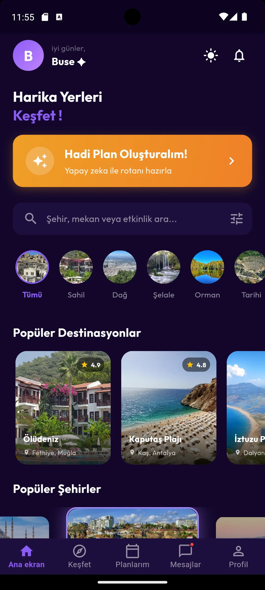
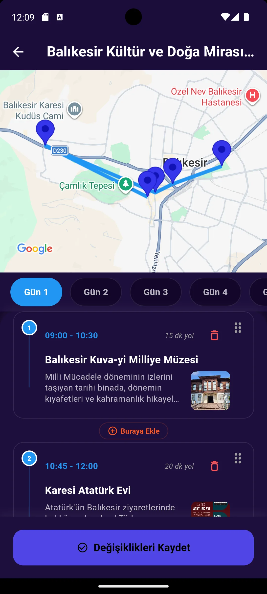
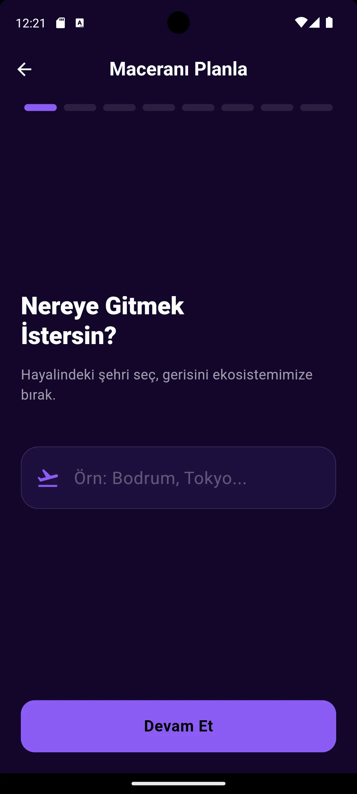
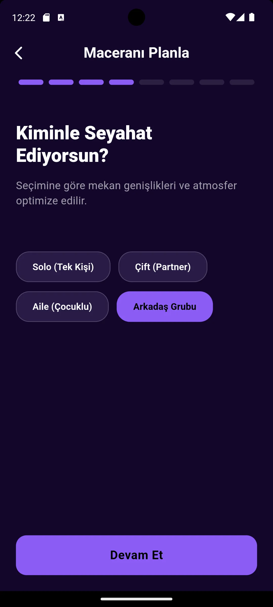
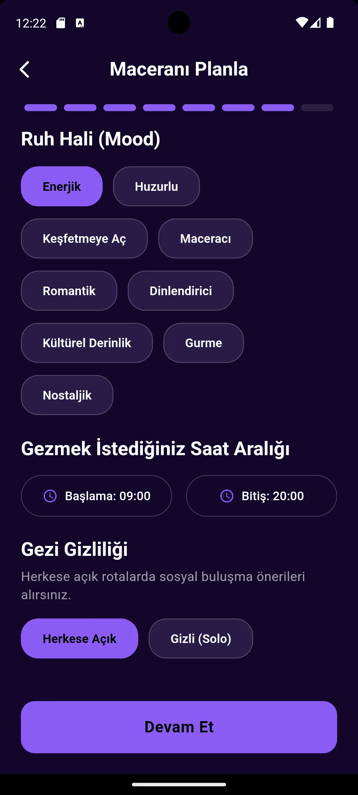
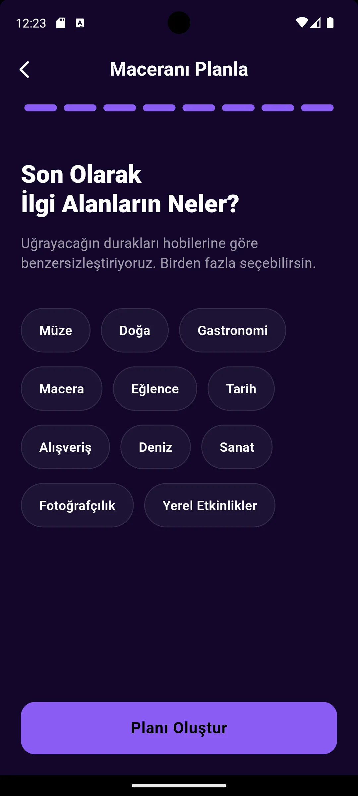

Kişiselleştirilmiş rota
Şehir, tarih, başlangıç noktası, ulaşım, bütçe, ruh hâli ve ilgi alanları tek bir rota bağlamında birleşiyor.
Wayra; kişisel tercihleri, konumu ve zamanı yapay zekâ ile işleyerek düzenlenebilir gezi rotalarına dönüştürüyor; keşif, plan ve yol arkadaşlığı akışlarını tek mobil deneyimde birleştiriyor.


Wayra’nın çekirdek fikri, “Nereye gitmeliyim?” sorusunu tek seferlik bir öneriyle değil; tercihleri anlayan, rotayı haritada görünür kılan ve sonradan düzenlemeye izin veren bir ürün akışıyla yanıtlamak.
Şehir, tarih, başlangıç noktası, ulaşım, bütçe, ruh hâli ve ilgi alanları tek bir rota bağlamında birleşiyor.
Üretilen duraklar günlere ayrılıyor; kullanıcı sıralamayı değiştiriyor, durağı silebiliyor veya iki durak arasına yenisini ekleyebiliyor.
Etkinliklere katılma, yol arkadaşı bulma, sohbet içinde plan onaylama ve MergeWay ile iki rotayı harmanlama aynı sistemde çalışıyor.
Uzun bir form yerine her ekranda tek karar isteyen akış; kullanıcıyı ilerleme göstergesiyle yönlendiriyor ve yapay zekâ için gerekli bağlamı parça parça topluyor.




Aynı sayfanın kaydırılmış görüntüleri birlikte; art arda gelen durumlar ise bir zaman dizisi olarak sunuluyor. Böylece 30 ekran, ürünün gerçek akışını kaybetmeden okunabiliyor.
Karşılama, yapay zekâ ile plan oluşturma, arama, kategori ve popüler destinasyonlar tek kaydırma akışında.
GitHub deposundaki uygulama; rota üretimini Gemini servisiyle, kimlik ve veriyi Firebase ile, mekânsal deneyimi Google Maps ve konum servisleriyle kuruyor.
Model çıktısı gün, durak, saat, koordinat ve geçiş süresi gibi alanları olan JSON rota şemasına yönlendiriliyor.
preferences → Gemini → route JSONHarita, geocoding, konum ve polyline paketleri; rota detayını yalnızca liste değil, düzenlenebilir mekânsal bir deneyim yapıyor.
place → coordinate → polylineFirebase tabanlı kimlik, sohbet, istekler ve bildirimler; ortak plan durumunu kullanıcılar arasında senkron tutuyor.
auth → firestore → messagingTeknik anlatım, depodaki kaynak dosyaları ve bağımlılıklar üzerinden hazırlanmıştır.
30 gerçek ekran; yapay zekâ destekli rota üretiminin, düzenlenebilir haritanın ve sosyal seyahat akışlarının çalışan bir ürün sisteminde nasıl birleştiğini gösteriyor.
Diğer projelere dön →